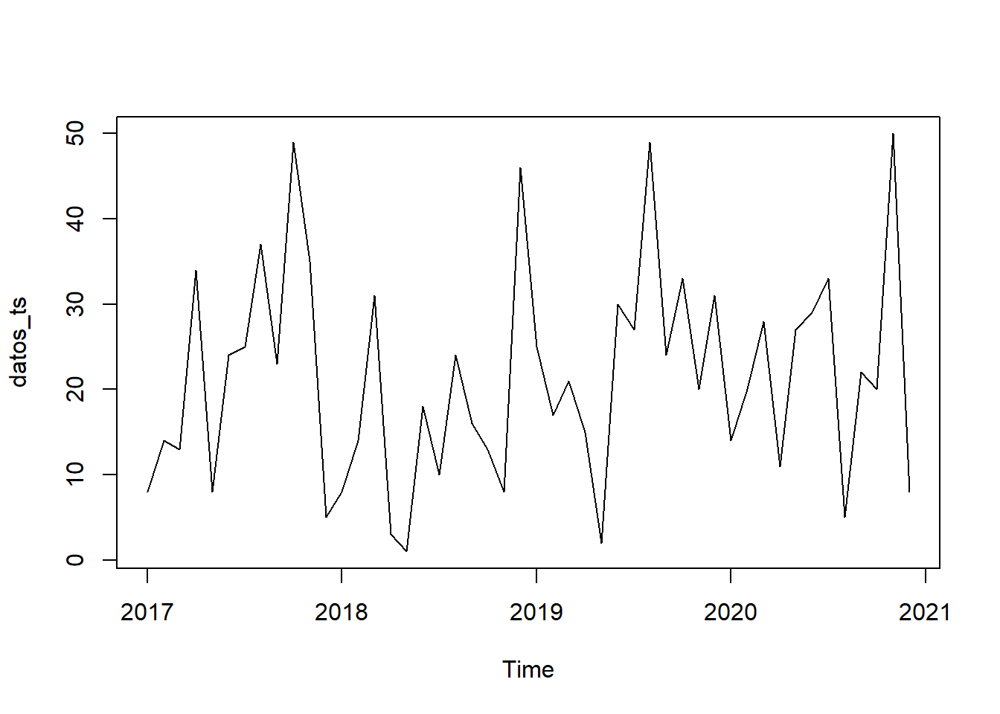
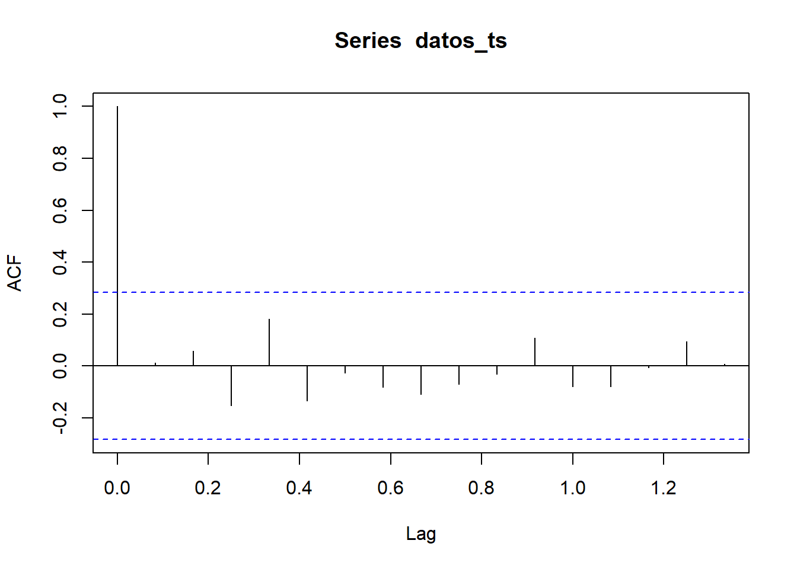
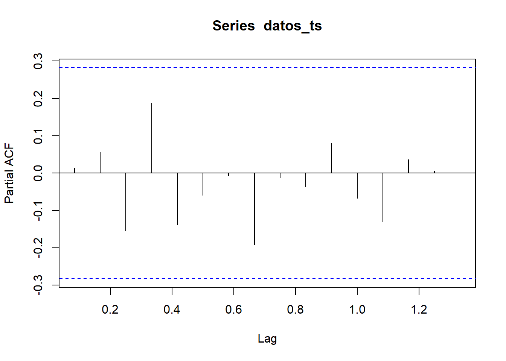
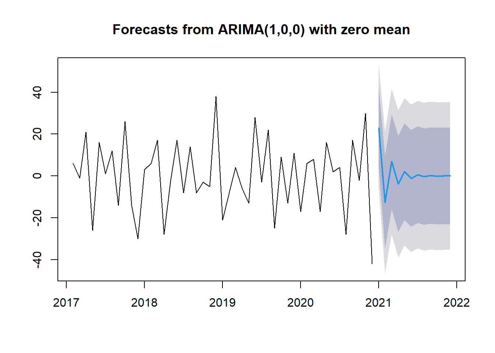
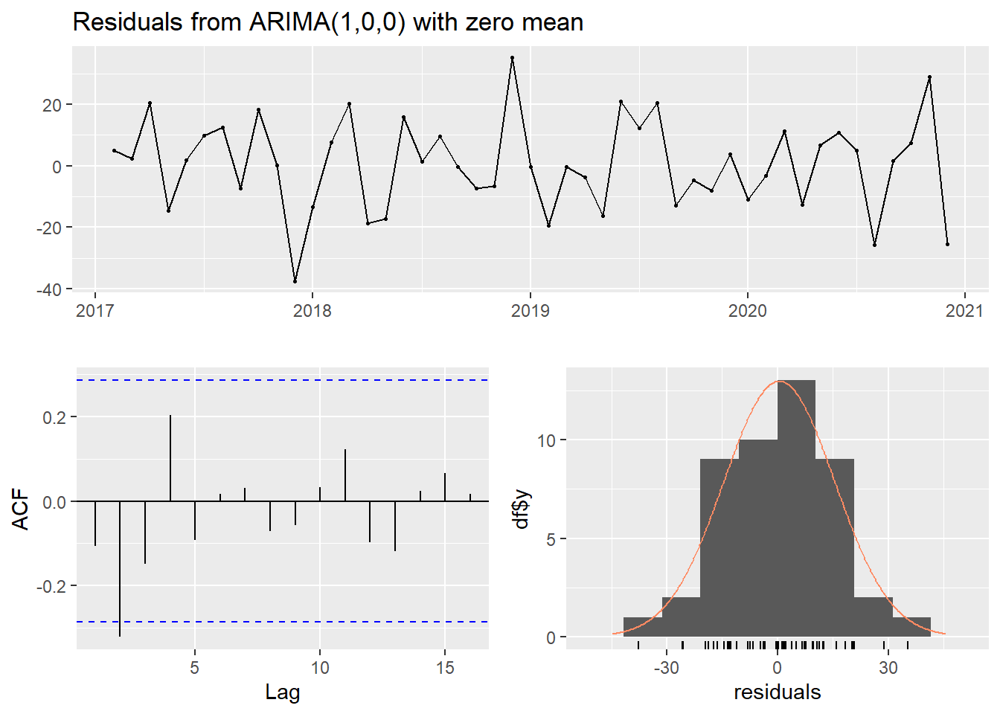

Chapter 6 Modelos estacionarios en series de tiempo
Este informe presenta un análisis de las ventas históricas y un pronóstico para los próximos 12 meses. El objetivo es proporcionar información clara y accionable para la toma de decisiones estratégicas. Utilizamos métodos estadísticos robustos para identificar patrones, tendencias y estacionalidades en los datos de ventas, lo que nos permite anticipar la demanda futura.
6.1 Análisis de las Ventas Históricas
Inicialmente, se realizó una revisión detallada del historial de ventas. Se observaron fluctuaciones a lo largo del tiempo, lo que sugiere la presencia de patrones recurrentes y posibles factores externos que influyen en las ventas. Para comprender mejor estas fluctuaciones, aplicamos diversas técnicas de análisis de series de tiempo. La visualización de los datos a través de gráficos nos permitió identificar tendencias generales y estacionalidades. Se emplearon herramientas estadísticas como la función de autocorrelación para determinar la relación entre las ventas en diferentes momentos del tiempo.
library(forecast)
library(tseries)
datos <- readxl::read_excel("MUESTRA SERIE TIEMPO.xlsx")
sum(datos$quantity)## [1] 56617datos$transaction_date <- as.Date(datos$transaction_date, origin="1899-12-30")
datos_ts <- ts(datos$quantity, frequency = 12, start = c(2017, 1), end = c(2020,12))
plot(datos_ts) 


Se comprobó la estacionariedad de la serie de tiempo, es decir, se verificó si las propiedades estadísticas de la serie, como la media y la varianza, permanecen constantes a lo largo del tiempo. En caso de no ser estacionaria, se aplicaron transformaciones para estabilizar la serie y obtener resultados más fiables en el pronóstico.
##
## Augmented Dickey-Fuller Test
##
## data: datos_ts
## Dickey-Fuller = -2.7329, Lag order = 3, p-value = 0.2814
## alternative hypothesis: stationary#Si la prueba indica que la serie no es estacionaria, deberás diferenciarla:
datos_ts_diff <- diff(datos_ts)
adf.test(datos_ts_diff)##
## Augmented Dickey-Fuller Test
##
## data: datos_ts_diff
## Dickey-Fuller = -4.6247, Lag order = 3, p-value = 0.01
## alternative hypothesis: stationary6.2 Metodología de Pronóstico
Para generar el pronóstico, utilizamos un modelo ARIMA. Este modelo es especialmente adecuado para series de tiempo que presentan autocorrelación, es decir, cuando los valores pasados influyen en los valores futuros. El modelo ARIMA se seleccionó automáticamente con base en criterios de información que buscan el mejor ajuste a los datos históricos. Además del modelo ARIMA, se exploraron otras metodologías de pronóstico, como el modelo de Holt-Winters, el cual es particularmente útil para series de tiempo que presentan tendencias y estacionalidades. Esto nos permitió comparar diferentes enfoques y seleccionar el modelo que mejor se adapta a las características de los datos.
## Series: datos_ts_diff
## ARIMA(1,0,0) with zero mean
##
## Coefficients:
## ar1
## -0.5468
## s.e. 0.1299
##
## sigma^2 = 227.5: log likelihood = -193.9
## AIC=391.79 AICc=392.07 BIC=395.49
##
## Training set error measures:
## ME RMSE MAE MPE MAPE MASE ACF1
## Training set 0.4678724 14.92075 11.85491 80.97321 148.3785 0.6092831 -0.10556076.3 Resultados del Pronóstico:
El pronóstico generado por el modelo se presenta en un gráfico que muestra las ventas esperadas para los próximos 12 meses, junto con intervalos de confianza. Estos intervalos indican el rango dentro del cual se espera que se encuentren las ventas futuras con un cierto nivel de probabilidad. Es importante destacar que los pronósticos son estimaciones basadas en datos históricos y en las propiedades estadísticas de la serie de tiempo. Por lo tanto, existe un grado de incertidumbre asociado a los valores pronosticados. Es fundamental monitorear el desempeño real de las ventas y compararlas con el pronóstico para realizar ajustes en el modelo.

6.4 Análisis de Residuos
Para validar la confiabilidad del modelo, se realizó un análisis de los residuos, que son las diferencias entre los valores reales y los valores pronosticados por el modelo. Se verificó si los residuos cumplen con las propiedades estadísticas deseadas, como la media cero y la varianza constante. Este análisis nos permite evaluar la calidad del ajuste del modelo y detectar posibles desviaciones o patrones no explicados.

##
## Ljung-Box test
##
## data: Residuals from ARIMA(1,0,0) with zero mean
## Q* = 10.279, df = 8, p-value = 0.246
##
## Model df: 1. Total lags used: 96.5 Conclusiones y Recomendaciones:
El análisis de series de tiempo proporciona información valiosa. El pronóstico de ventas permite anticipar la demanda futura y optimizar la gestión de inventarios, la asignación de recursos y las estrategias de marketing.
Se recomienda utilizar el pronóstico generado como una herramienta de apoyo para la toma de decisiones, pero siempre teniendo en cuenta la incertidumbre inherente a los pronósticos. Es importante monitorear el desempeño real de las ventas y ajustar las estrategias de la empresa en función de los resultados observados.